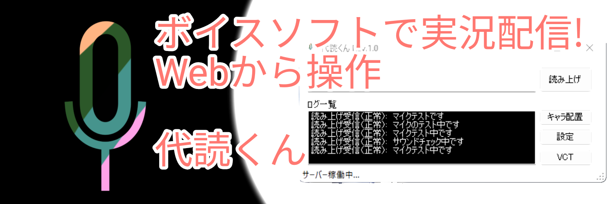
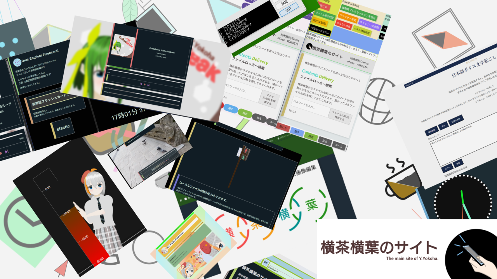

横茶横葉のサイト
横茶横葉のサイト横茶横葉からパスワードを貰った方はコチラへ↓
Contents Delivery
ファイルロッカー検索
横茶横葉からファイル/URLへのパスワードを受け取った方はこちらへ入力すると、預かっているファイル/URLを探してきてくれます。
Rev.2.6
当サイトを閲覧Pick UP!
Latest News!
新ソフト 代読くん & VoiceConTool公開開始
Webから音声合成ソフトを操作できるソフト 代読くん と 代読くんを使って実況動画配信が出来るツール VoiceConToolが公開されました。
お試しになりたい方は以下のURLからご覧いただけます。 
代読くん公開リポジトリ(OSSです!)
※VoiceConToolは代読くんを起動後、VCTボタンを押すとご利用いただけます。
2026/05/08
記事・ブログサイトを移行中です
旧素材配布サイトYOKONOHAにて公開していた横葉ノートをこちらのサイトに移動しています。
ご覧になりたい方は以下のURLからご覧いただけます。
横葉ノート(YOKONOHA Note) on 横茶横葉のサイト
新サービスを開始しました
FSWrite サイト作成ツール を正式リリースしました。
ご利用になりたい方は以下のURLからご利用になれます。(内容はベータ版とは異なります。)
FSWrite Web版 - 誰でもブラウザ上で無料で簡単にWebサイトを作れる! FSoverrideCSSベースのHTML作成ツール
2026/03/28
Coffeeブラウザ LTS版(限定頒布版ビルド)のサポート終了について
一般向けCoffeeブラウザは、2025年7月24日に既にサポートは完全に終了していますが、申し出のあった方に配布致しましたLTS版(v26.0 バージョンコード:Maboroshi)につきましてもサポート終了期日が決定致しましたのでお知らせ致します。
2026年3月1日をもちまして完全にサポートが終了することとなりました。この期日を過ぎてのご利用はお控えください。なお、CoffeeAccess(データ救出用アフターサポートアプリ)につきましては現在配布はしておりませんが、インストールされている方向けのサポートを継続致します。
追記:3/1となりましたので、サポートを終了致しました。約6年間、ご利用いただきありがとうございました! 引き続き新ブラウザの開発を進めて参ります!
2026/02/26(編集済み)
サイトシステム改良
当サイトメインページへアクセスする際にURL末尾に"?cdusr=1"というクエリパラメータを追加すると、Contents Deliveryにのみアクセスできるようになりました!
ファイルロッカーサービスのみ使いたいという方向けです。
https://yokonoha.github.io?cdusr=12025/12/26
MILESTONE!
現在は変わってしまいましたが、そもそもの当サイトの活動の原点は、my belovedな「スマホの良さを伝え・再認知していただく!」ことでした。
今年で当サイトは8年目! 8年の歩みをまとめました。

アプリ開発
記録していた範囲でしか分かりませんが、累計37点のスマホアプリをリリースしました! 広告・アプリ内課金一切なし! 総アップデートパッケージ配布回数はCoffee:25回,CoffeeLite:5回,自動スクロールマップ二画面:4回,GPS Info:2回,横葉あとらす:5回でした。
古端末再生プロジェクトなんて銘打って、OSバージョンが5から最新の16(当時は15)まで対応させるというこだわりを大事にしてました。
古いOSを使っている方も、最新のOSを使っている方も、アプデでサポートを切ったりせず、大事にしたいという思いからです(なんてね)。
PC向けフリーorオープンソースソフトウェア開発
スマホを最大限活用し愛するためには、やはりパソコンの存在も不可欠。ということでPCソフトもたくさん作ってまいりました。
私はWindowsFormsが大好きなので、ほとんどがC#のこれで作られたソフトです。(tkinterを使った時もありましたが...)
2026年6月現在で総数約20点...だと思います。"ニーズ"より"シーズ"というニーズガン無視な"絶対よくない" なんといいましょうか、時代を逆行するような変なソフト作りをしているにもかかわらず、思ったよりもいろんな方に使っていただけました!
ありがとうございます。
無料Webサービス開発
ブラウザで動くサービスもいくつか作りました! これもたくさん作ってきましたが、現在も利用可能なものは10点程度でしょうか。
ブラウザで動くものは、スマホでもPCでも、OSも選ばずに使えるのが魅力。そして作るのが楽です。
今出ているものの中では、MinatsukiToneがおすすめです。
キャラクター制作

普段何気なく触るスマホに対して「改めてすごいんだなぁ」と意識を向けていただくには、スマホそのものをPRすることが必要かなぁと思ったので擬人化..とはいきませんが、スマホを題材にキャラクターを作ってみました。
そのはずでしたが、当サイトキャラクターを仕上げた後、スマホとは関係のないキャラクター作りを無秩序に続けてしまいました。
全員分の3Dモデルを用意するの大変でした。私の師匠がやってるみたいに各キャラに設定をつけるってのも一応やりましたが、なんだか恥ずかしくなってきました(ﾃﾚ。)。
もうたぶんやりません。だれか引き継いで～...
※
当時のサイトキャラクター(画像の中央)に関してはららられれ(@Rarararere1)へ引き継ぎます。
誰も引き継ぎ手がいなければ、Mikan師匠とかに押し付けます。
その他
その他、イラストや3Dモデルの素材配布、ブログ記事の公開、SNS投稿なども行ってきました。
もはやなにをしてるのかわからない やることは何かに絞りたい そんな状態が恒常化しつつある当サイト今日この頃です。
しかしながら、ガジェット好きの方・3DCG好きの方、イラスト好きの方など、非常に多くの方の目に留まって頂けてとてもうれしいと感じた8年でした。当サイトもWebサービスもいろんな国の方にいろんなデバイスからご活用いただけましたし...
そろそろ任務完了の時は近い! かもしれませんね。後しばらくはこのサイトで、スマホの良さを伝えるために、いろんなことをやっていきたいと思います! これからもよろしくお願いいたします!

Designed by FSOverride
このサイトについて
また、当サイトはリンクフリーです。もしよろしければ以下のバナーをお使いください。


.png)
.png)

OTHER LINKS!
イラスト ららられれ